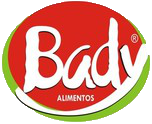

Produtos


| Informação Nutricional | |||
| | Porção de 50g - 1 Unidade | | |||
| %VD(*) | Quantidade por porção | ||
| 11% | 299kcal | Valor Calórico | |
| 8% | 23g | Carboidrato | |
| 7% | 5g | Proteínas | |
| 24% | 13g | Gorduras Totais | |
| 0% | 0g | Gorduras Saturadas | |
| ** | 0g | Gorduras Trans | |
| ** | 8g | Colesterol | |
| 4% | 1g | Fibra Alimentar | |
| 0,50% | 4mg | Cálcio | |
| 10% | 1,34mg | Ferro | |
| 17% | 399mg | Sódio | |
| 37% | 72mg | Ácido Fólico | |
| (**) Valores diários de referência não estabelecidos | |||